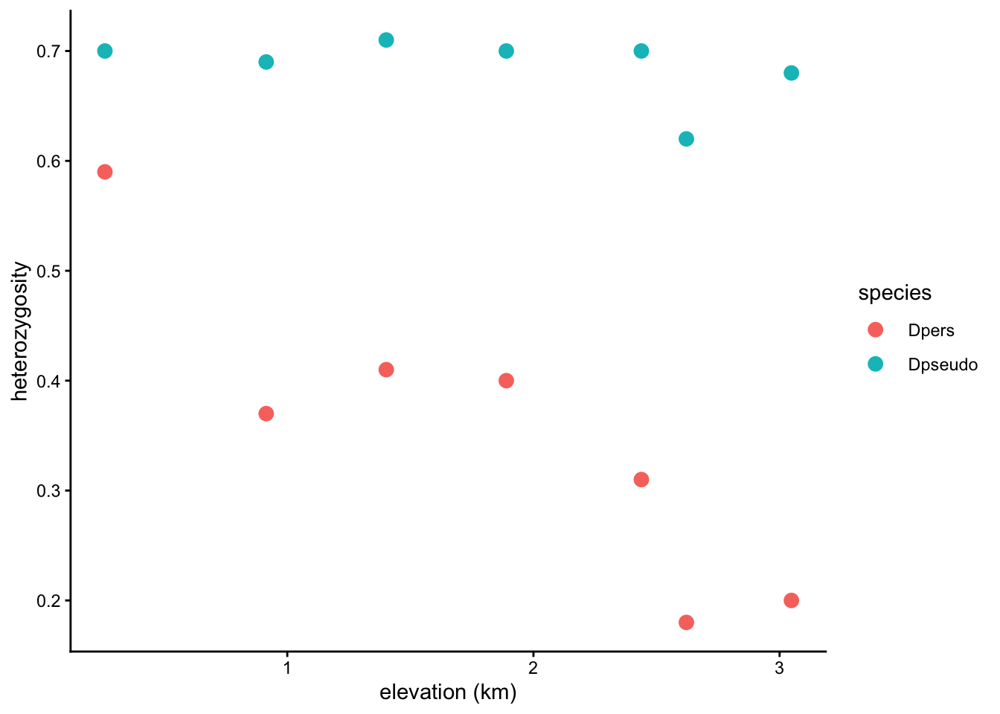
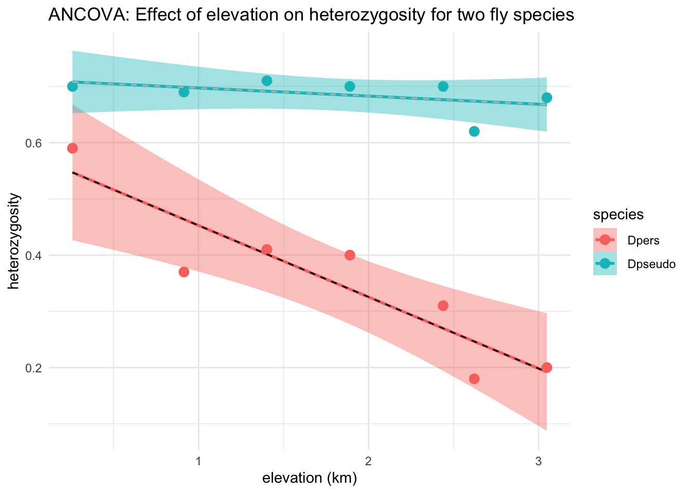

27 Fri Nov 13 (A4 due) - Analysis of Covariance (ANCOVA)
ANCOVA is applied to data situations that require both ratio and nominal scale explanatory variables. This topic is discussed in Dr. Schneider’s notes here.
One important use is to compare two or more regression lines.
ANCOVA demonstrates the use of categorical along with ratio scale variables within the framework of the general linear model. The categorical variable is species (D. persimilis or D. pseudoobscura).
The ratio scale variable is change in heterozygosity with altitude. This example also shows the logic of interaction terms, which are examined before main effects.
27.1 Introduction
The next application of the general linear model compares two functions expressed as straight lines. The data are from Dobzhansky (1948) as reported in Brussard (1984). Theodosius Dobzhansky collected data on inversion heterozygosity (assuming Hardy Weinberg equilibrium) of 3rd chromosome inversions from two species of fruit fly, from Yosemite Park, California.
Inversion heterozygosity is a measure of genetic variability, which is the raw material that natural selection acts on to produce descent with modification (Darwinian evolution). Thus, the origin and maintenance of genetic variability is one of the central questions in population biology.
What factors generate or erode genetic variability? Harsher environments at higher altitudes are expected to select for narrower range of phenotypes, hence reduce genetic variability. Does genetic variability decrease at higher altitude, due to stronger selection in extreme environments? Does the heterozygosity gradient differ in two co-occuring species of fruitfly Drosophila persimila and Drosophila pseudoobscura?
27.3 Data
species.alt.data = read.csv("https://raw.githubusercontent.com/ahurford/biol-4605-data/refs/heads/main/data/heteroz-alt-species.csv")
species.alt.data## elevation.ft elevation_km species heterozygosity
## 1 850 0.25908 Dpers 0.59
## 2 3000 0.91440 Dpers 0.37
## 3 4600 1.40208 Dpers 0.41
## 4 6200 1.88976 Dpers 0.40
## 5 8000 2.43840 Dpers 0.31
## 6 8600 2.62128 Dpers 0.18
## 7 10000 3.04800 Dpers 0.20
## 8 850 0.25908 Dpseudo 0.70
## 9 3000 0.91440 Dpseudo 0.69
## 10 4600 1.40208 Dpseudo 0.71
## 11 6200 1.88976 Dpseudo 0.70
## 12 8000 2.43840 Dpseudo 0.70
## 13 8600 2.62128 Dpseudo 0.62
## 14 10000 3.04800 Dpseudo 0.68require(ggplot2)
g1=ggplot(species.alt.data, aes(x = elevation_km, y = heterozygosity, color = species, fill = species)) +
geom_point(size = 3)+xlab("elevation (km)")+theme_classic()
g1
species.alt.model <- lm(heterozygosity ~ species + elevation_km + species*elevation_km, data = species.alt.data)
summary(species.alt.model)##
## Call:
## lm(formula = heterozygosity ~ species + elevation_km + species *
## elevation_km, data = species.alt.data)
##
## Residuals:
## Min 1Q Median 3Q Max
## -0.09367 -0.00832 0.01039 0.02232 0.06049
##
## Coefficients:
## Estimate Std. Error t value Pr(>|t|)
## (Intercept) 0.58006 0.04115 14.095 6.35e-08 ***
## species Dpseudo 0.13160 0.05820 2.261 0.04727 *
## elevation_km -0.12729 0.02038 -6.246 9.55e-05 ***
## species Dpseudo:elevation_km 0.11284 0.02882 3.916 0.00289 **
## ---
## Signif. codes: 0 '***' 0.001 '**' 0.01 '*' 0.05 '.' 0.1 ' ' 1
##
## Residual standard error: 0.04977 on 10 degrees of freedom
## Multiple R-squared: 0.9518, Adjusted R-squared: 0.9373
## F-statistic: 65.81 on 3 and 10 DF, p-value: 6.906e-07## Analysis of Variance Table
##
## Response: heterozygosity
## Df Sum Sq Mean Sq F value Pr(>F)
## species 1 0.39111 0.39111 157.907 1.892e-07 ***
## elevation_km 1 0.05991 0.05991 24.189 0.0006064 ***
## species:elevation_km 1 0.03798 0.03798 15.332 0.0028868 **
## Residuals 10 0.02477 0.00248
## ---
## Signif. codes: 0 '***' 0.001 '**' 0.01 '*' 0.05 '.' 0.1 ' ' 1g2=g1+geom_smooth(method = "lm", se = TRUE, fullrange = TRUE) +
theme_minimal() + ggtitle("ANCOVA: Effect of elevation on heterozygosity for two fly species")
g2## `geom_smooth()` using formula = 'y ~ x'## (Intercept) species Dpseudo
## 0.5800609 0.1316026
## elevation_km species Dpseudo:elevation_km
## -0.1272907 0.1128435beta0 = unname(coef(species.alt.model))[1]
beta.sp = unname(coef(species.alt.model))[2]
beta.elev = unname(coef(species.alt.model))[3]
beta.int = unname(coef(species.alt.model))[4]
elevation = species.alt.data$elevation_km
beta1.line = beta0 + elevation*beta.elev
beta2.line = (beta0 + beta.sp) + elevation*(beta.int + beta.elev)
species.alt.data = data.frame(species.alt.data, beta1.line, beta2.line)
g2 +geom_line(data=species.alt.data, aes(y=beta1.line), color = "black", linetype="dashed")+geom_line(data=species.alt.data, aes(y=beta2.line),color = "grey", linetype="dashed")## `geom_smooth()` using formula = 'y ~ x'